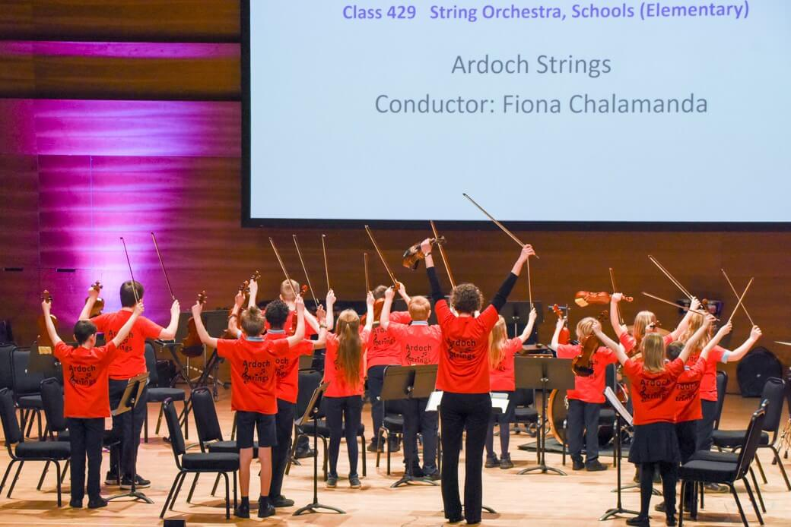

Instrumental Opportunities
Objective
The objective of this project is to provide primary children within the Ardoch area with the opportunity to participate in the initial stages of learning a musical instrument. Clearly it takes years to learn to play an instrument competently, yet much can be achieved within the initial years if handled effectively, including opportunities to develop basic technique, play simple tunes and play together in groups in harmony. The benefits of learning a musical instrument have been well documented but can be summed up in terms such as fun, discipline, teamwork, clear progression, performance confidence and positive development of the brain.
Background
It is almost 10 years since I was approached by the Ardoch Development Trust (ADT) to see if I could organise any music-making for children in Braco and Greenloaning. In the October of 2010 I started out teaching violin at Braco and Greenloaning Primary Schools. Before it closed, I also offered piano at Greenloaning due to the availability of an instrument. We bought five violins which learners could use in school and so the project took off. With the full cooperation of the head teachers of both primary schools, I was able to teach violin and piano in groups at the schools during school time. This reflected the teaching run by Perth and Kinross Council (PKC) in the same two schools, where group guitar lessons are offered during school time to P6s and P7s. However, by offering violin from P3 and making it free from an audition process, I believe the Instrumental Opportunities project is particularly inclusive.
Teaching
At the time of writing I am in Braco Primary school for 3 hours once a week, during which time I teach nine groups of up to four children. I am funded for 8 weeks in each term. From October to March I run an afterschool group in the village hall on a Friday for children who have been learning for a year or more. This has proven very popular with children and parents alike, and gets the different abilities playing together in one large group
Performances
The project’s learners are confident performers as they understand that it is a key part of learning a musical instrument. They love getting changed into their red Ardoch Strings T-shirts and feel a real group identity on stage. Over the years we have played at school events, for the local Guild, for the annual Christmas tree lighting and in a number of care homes. We have even busked and most recently we entered the Perform in Perth arts festival, at which we were given a First Class award and plenty of newspaper coverage.
The head of the PKC Instrumental Service was very complimentary and encouraged some of the older children to attend the PKC Junior Music Camp. As a result three P7s and one P6 attended a five-day residential course in April 2019, culminating in a huge concert with learners from all over Perth and Kinross in the Perth Concert Hall.
Assessments and Outcomes
In 2013 I started using an assessment scheme run by the Associated Board for the Royal Schools of Music (ABRSM) for candidates taught in groups. Through this scheme, children can complete a series of medals, most of them doing Bronze, Silver and Gold in P5,6 & 7 respectively. They serve as a useful prequel to the graded music exams. Nine years later, some of the first beginners have taken Nat5 Music performance exams on violin and piano, play in their High School orchestras or with the Blackford Fiddle Group. In the meantime, almost 100 children have been taught through the project, over 130 ABRSM Medal Assessments and 24 ABRSM graded music exams have taken place! Many of the benefits of the childrens’ music-making, however, are hard to quantify other than anecdotally or with reference to wider research, as stated in the project’s objectives above.
Influencing
Due to its success, I was invited to set up parallel projects to Ardoch Strings in a number of different schools – first Comrie, then Dunning and Blackford. I was able to find tutors to take over at all three schools after a couple of years at each, though I still have involvement at Comrie.
It is a great joy to run this project and whenever I have required any help, whether from parents, the school or the ADT, support has been forthcoming.